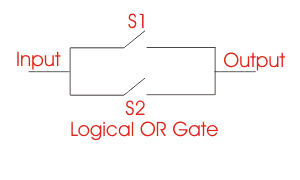

It is one of the important logical operation useful in Boolean algebra and other electronics devices. In real life there are several Integrated Circuits (I.C) where the concept of OR Operation or Boolean OR operation is used.
Though in these types of circuits logical gates are used but still input and are dependent on the same logic. Thus by studying these operations we may gather concepts on those circuits. The Logical OR operation is based on some basic concepts which can be understand by the truth table given below. Before going to the OR operation truth table we should know the sign used in this type of operation. In Boolean OR operation the sign used is (+). Now let follow the inputs and outputs of the troth table.

| INPUT | OUTPUT | |
|---|---|---|
| A | B | Y=A+B |
| 0 | 0 | 0 |
| 0 | 1 | 0 |
| 1 | 0 | 1 |
| 1 | 1 | 1 |
In this truth table you can see that there are two inputs and a single output. When the input of A and B is 0 the output is also 0. When the input of A=0 and B=1 the output is 1, when the value of A=1 and B=0 in the input then the respective output is also 1 and at last when A=1 and B=1 in input the Logical OR operation output is also 1. So you may find one thing that in OR operation only when both the inputs are 0 the output is 0 but is any of the input is 1 the output is 1.
Now let us apply this logic in digital circuits. In circuit 1= flow of signal pulse and 0=floe of no signal. You concept on Boolean OR operation will be clear as you will follow the switch circuit in fig. 1
In the above figure there are two switches connected in parallel. Now see as I have told earlier that 1=flow of signal and 0= no flow of signal, in this circuit if either of the switch is closed the there will be an output but if both the switcher are opened no output will be received. This logic is exactly equal as in Logical OR operation. Here when s1=0 and s2=0 the output is also equal to zero. But if either of the one is closed i.e either S1=1 or S2= 1 or both are equal to 1 then output will have a signal pulse which is equal to Boolean OR operation or called OR operation.
 by
by